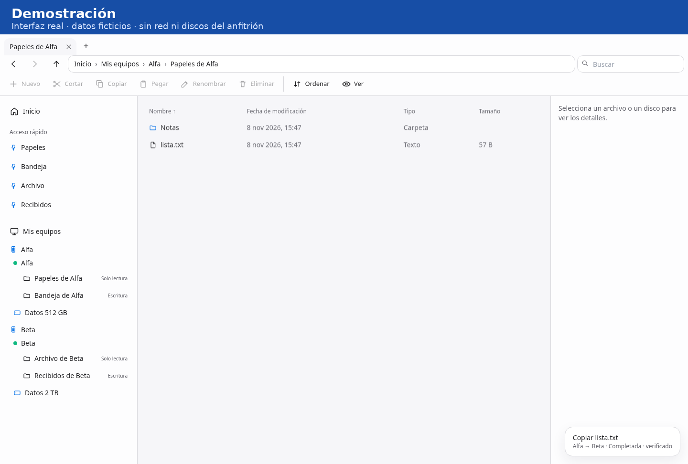

Demostración

Qué es
La documentación lo presenta sin cuenta y sin telemetría, y sin un servicio en la nube para ver, buscar o copiar archivos. El móvil hace de mando: sube y descarga archivos, y no es un disco.
En el catálogo queda en Terminado / mantener. La documentación de estado indica la versión 4.1.0. Describe un uso local y no lo da por instalado en los equipos de casa: ese paso figura como manual.
Es un único programa en Go, que hace de agente o de hub. La interfaz, en React, Tailwind y shadcn, se construye con Vite y va incluida en el programa, así que ejecutarlo no pide Node. Sale para Windows amd64, Linux amd64 y Linux arm64, incluida la Raspberry Pi. En Windows, la documentación describe un arranque con un script. En Linux, un servicio de usuario.
Capacidades documentadas
-
Ordenadores
Una ficha por ordenador, con sus discos y su capacidad.
-
Explorador
La estructura del Explorador de Windows 11 y el aspecto de macOS. Claro u oscuro según el sistema.
-
Búsqueda
Búsqueda por nombre dentro de las carpetas compartidas.
-
Copia
Copia de archivos entre equipos en flujo, sin guardarlos en un punto intermedio.
-
Movimiento
Primero copia, luego comprueba tamaño y SHA-256, y solo entonces borra el original. Si la comprobación falla, el original no se toca.
-
Salud de los discos
SMART, según la documentación: temperatura, horas, sectores y estado de atención. En Linux hace falta un componente opcional aparte. La demostración de esta página no la muestra como disponible.
-
iPhone
App en la pantalla de inicio, dentro de la red local. Sirve para subir y descargar. No es un nodo de almacenamiento.
Acceso, según la documentación
Solo la red local, con direcciones privadas o el propio equipo. Un token por equipo. Las carpetas compartidas nacen en solo lectura. La escritura y el borrado se activan aparte.
Rechaza las rutas que intentan salir de la carpeta compartida. No borra carpetas. No ejecuta órdenes ni se actualiza solo. Esto es lo que describe la documentación, no una garantía añadida por esta web.
Pruebas que describe la documentación
La documentación describe pruebas automáticas de rutas, de token, del filtro de red local, de la verificación de copias y del respaldo de la configuración. También describe una prueba con dos agentes y el hub moviendo un archivo, y otra en la que el destino informa mal el tamaño y el original no se borra. Menciona una autoprueba sin red, con seis comprobaciones, y un flujo de integración continua.
Esta web no ha ejecutado esas pruebas ni ha comprobado si esa integración ha corrido o con qué resultado.
Límites documentados
El iPhone no es un nodo. Sin HTTPS no hay modo sin conexión. Se copia un archivo cada vez, no una carpeta entera. La lista de transferencias se pierde al reiniciar el hub. Los archivos ya copiados se quedan.
No admite IPv6. La búsqueda en discos grandes es lenta. Las descargas muy grandes al iPhone pueden fallar por la memoria de Safari.